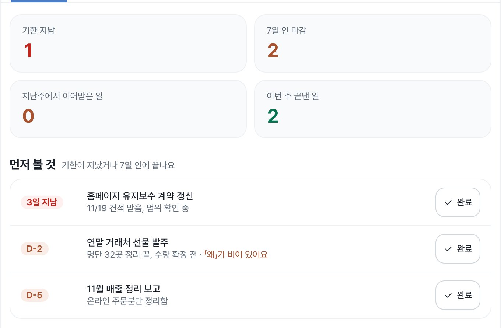
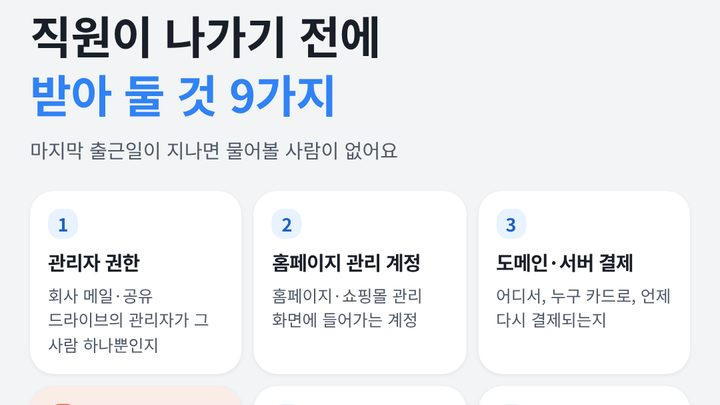
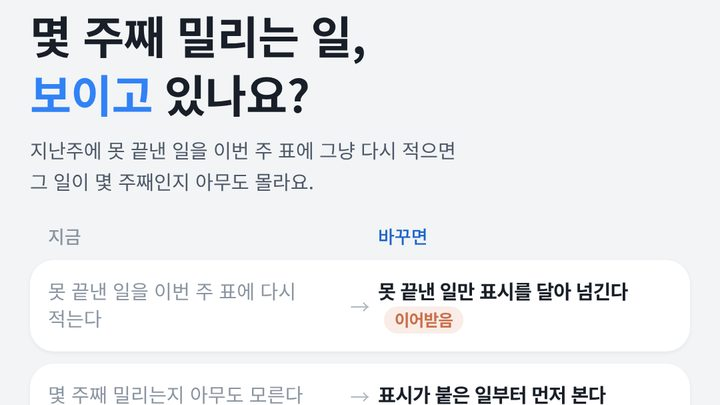
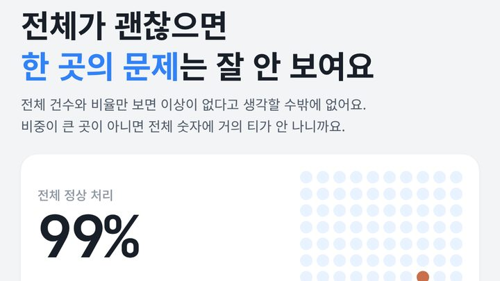
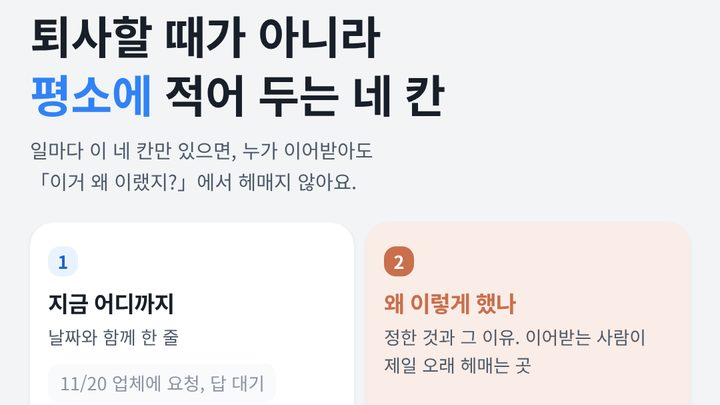

작은 회사 운영 노트
사람 하나 빠져도 안쪽 일이 돌아가게
한 사람이 여러 일을 맡고 있는 회사에서 자주 끊기는 곳을 정리해요. 사장님은 영업에 집중하시도록.
서비스 운영 일을 하면서 겪고 정리한 것들이에요 · 가입·구독 없이 쓰고, 파일은 회사 밖으로 나가지 않아요

팀 업무 화면 · 예시 데이터 · 눌러서 써 보기이런 순간, 있으셨죠 누르면 그 순간에 바로 쓸 수 있는 것으로 가요

양식직원이 갑자기 그만뒀는데 관리자 계정을 아무도 몰라요업무 인수인계서 양식 · 엑셀

도구못 끝낸 일이 몇 주째 밀리는지 안 보여요팀 업무 화면 · 바로 써 보기

도구매주 손으로 만드는 이 파일, 자동화될까요?내 파일, 자동화될까 · 검토는 무료

글인수인계 안 하고 퇴사하면? 업무 인수인계는 평소에운영 노트 · 블로그
양식
주간보고를 매주 처음부터 다시 써요주간 업무 보고 양식 · 엑셀
도구
여러 곳에서 온 파일을 합쳤더니 합계가 안 맞아요엑셀 파일 합치기
양식
올해와 작년을 같은 기간끼리 견주고 싶어요전년 대비 실적표 · 엑셀
글
합계는 4% 늘었는데, 한 곳이 66% 줄어 있었습니다운영 노트 · 블로그
전체
무료 양식·도구 전부 보기가입 없이 바로 써요
맞는 것이 아직 없어요. 이런 게 있으면 좋겠다고 알려 주세요